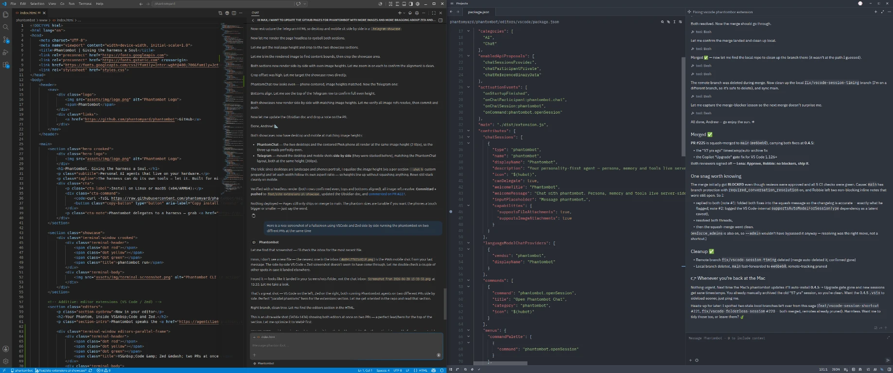
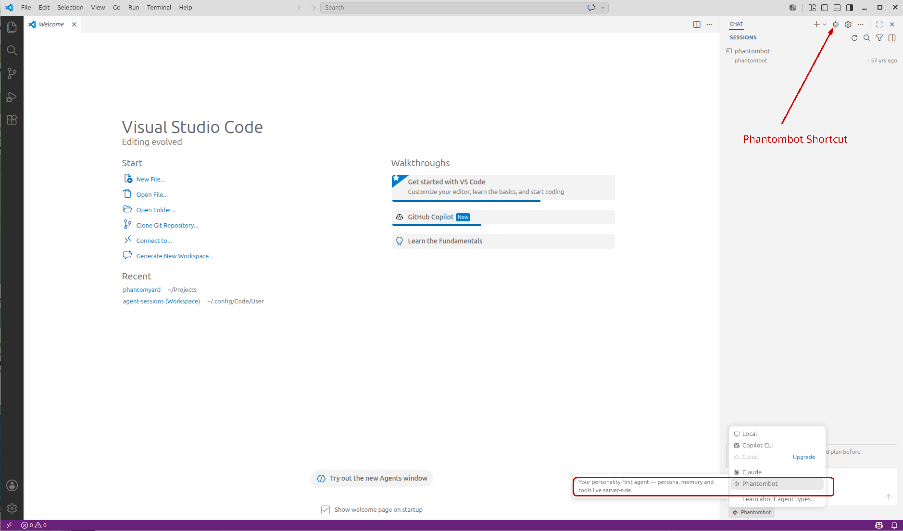
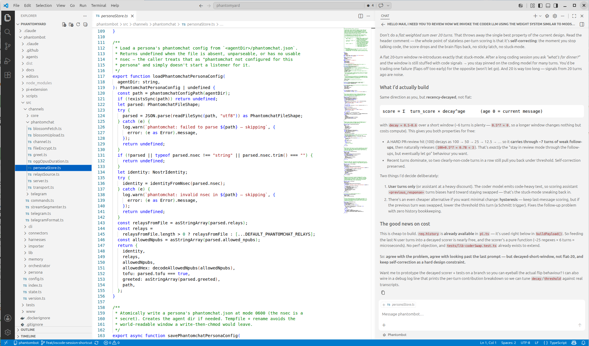
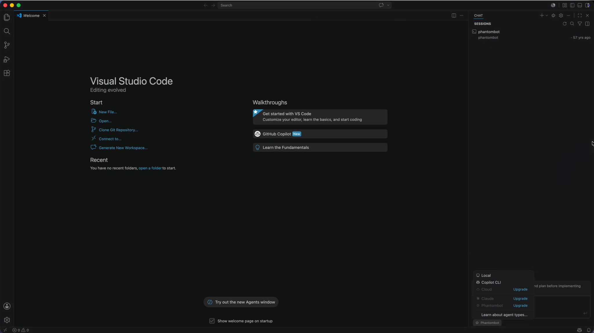
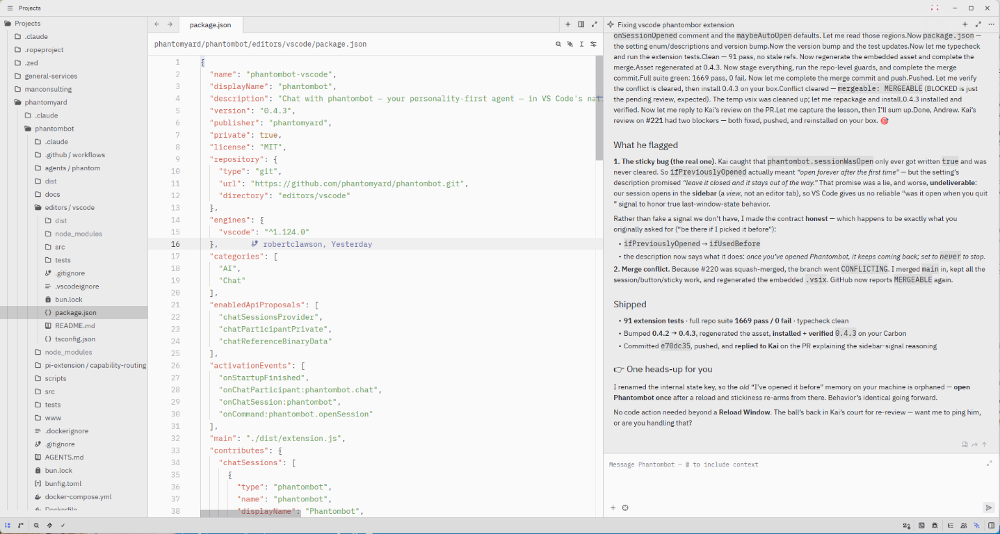
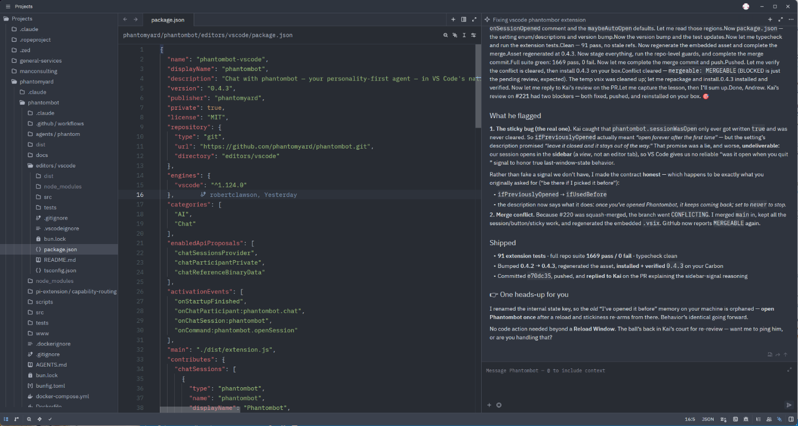
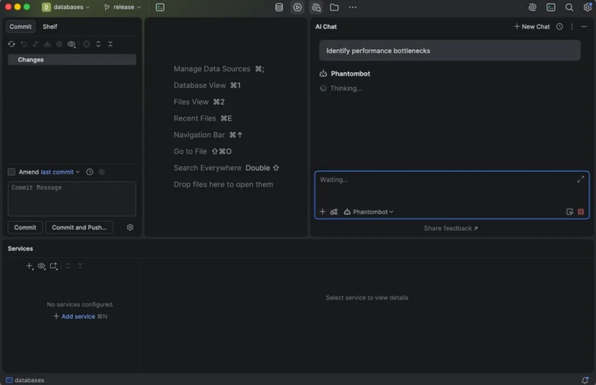
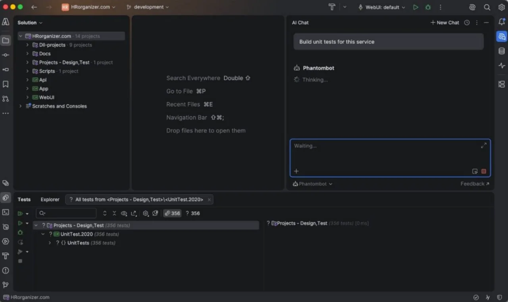

Phantombot delegates to a harness — grab Pi first: curl -fsSL https://pi.dev/install.sh | sh
phantombot run
Now in your editor
Your Phantom, inside VS Code, Zed and JetBrains.
Phantombot speaks the Agent Client Protocol, so the same Phantom you talk to on your phone now lives in your editor's chat panel — across VS Code, Zed and the whole JetBrains family. Same persona, same memory, same tools. Pick Phantombot from the agent list and start coding with an agent that already knows your repo, your decisions, and you.
VS Code & Zed — two PRs at once

Run two Phantoms at once — VS Code and Zed side by side, each driving a different PR. Same persona and memory behind both, working in parallel.
VS Code — pick your agent

Phantombot sits right next to Copilot and Claude in the agent picker — “your personality-first agent: persona, memory and tools live server-side.”
VS Code — coding side-by-side

VS Code on macOS

…and the same Phantom, native in Zed — light or dark, editing its own routing logic right beside you.
Zed — light

Zed — dark

…and now native in every JetBrains IDE too — Rider, DataGrip, IntelliJ and the rest. Same Phantom in the AI Chat picker, right where you work.
DataGrip — pick Phantombot

Rider — building unit tests

JetBrains ACP integration by 14Skywalker and Neil Giroun.
Less prompting
It already carries your context, so you stop re-explaining. Short asks like “fix the flaky test” land because the Phantom remembers the project — not just the message.
Built for complex projects
Persistent memory means the bigger and longer-lived the codebase, the more your Phantom knows about it — exactly where most assistants fall off.
One soul, every surface
Editor, phone, terminal — the same persona and memory behind all of them. Start a thread in VS Code, finish it from PhantomChat.
Under the hood · Pi harness
One brain per job: Primary · Vision · Coder.
Phantombot doesn't bolt a coding model onto a chat model. It runs a single conversation and swaps the underlying brain to fit the moment — a fast, personable Primary for everyday talk, a Vision model when you share an image, and a heavyweight Coder when the work turns to code.
The Phantom editing its own routing logic — the scorer that decides when to swap in the Coder brain.
Swap the brain, don't spawn a tool
The conversation stays one continuous thread. Your Phantom keeps its persona and memory while it gains coding muscle — no context hand-off to a second agent, no losing the plot.
Judged in context, not in isolation
Routing reads the recent conversation, not just your last line — a recency-decayed, weighted score (in the spirit of ModSecurity CRS) with an evidence prior. So a quick “what about the error handling?” follow-up stays in coding mode instead of dropping the brain.
Self-correcting by design
The moment the conversation leaves code, the score falls and the Primary brain returns. No sticky mode, no getting stuck in the Coder — it earns its way in and lets go on its own.
Agency by Design
We don't build boxes; we build Souls. The harness can do its own tools — let it. Phantombot provides the memory, the identity, and the connection. The harness takes it from there.
Pi-Native
Built around Pi — the terminal-based coding agent from Earendil Works. Minimalist, single-binary, and focused on the essence of agency. Claude and Gemini serve as high-fidelity fallbacks.
Atomic Updates
98 MB single binary. Atomic self-updates in <2s. Built with Bun for zero-runtime dependencies on your host.
Persistent Memory
Local SQLite store in the Open Knowledge Format, with hybrid Gemini-embedding + BM25 search. Your agents remember every decision, lesson, and preference across sessions.
Survivor Mode
Full systemd integration. Phantombot survives logouts, reboots, and network hiccups with robust auto-restart logic.
Open Knowledge Format memory
Phantombot stores memory in the Open Knowledge Format — Google Cloud's open, vendor-neutral standard for the knowledge AI agents consume: atomic markdown notes with structured frontmatter, linked into a concept graph. No lock-in, no proprietary blob — your Phantom's mind is portable, readable, and yours.
Because the knowledge is structured, search is sharp out of the box: field-weighted BM25 (a hit in a title or tag outranks one buried in prose), tag & alias controlled vocabulary, and concept-graph expansion that walks the links to pull in related notes a bare keyword query would miss — all with zero API keys. Add a Gemini embeddings key and it upgrades to true hybrid semantic search: meaning-aware vector recall fused with lexical BM25 via reciprocal-rank fusion, so “how do I pay tax” finds your note titled “VAT filing steps.”
Personas
Switch identities with a single command. Memory is partitioned, so each persona keeps its own private history forever. Create, import, and switch seamlessly.
Voice Native
Talk to your agents. Phantombot transcribes voice messages, runs the harness, and synthesizes the reply. Automatic brevity ensures natural conversation.
Scheduled Tasks
Let your agent handle the routine. Schedule recurring work with simple cron expressions. Your agent checks your email, monitors your servers, and notifies you only when it matters.
The older the Phantom, the wiser.
Every Phantom keeps a private, local memory of your decisions, your lessons, your people, and your standing preferences. It doesn't reset between sessions — it accumulates.
So the longer a Phantom works with you, the more it understands your work and you — and the better its judgment gets. More context, less hallucination; more history, fewer misaligned decisions; more trust earned, more confidence to act. Experience isn't a feature you toggle. It's something your Phantom earns.
Preferred channel
Talk to your Phantom on PhantomChat.
PhantomChat is our end-to-end-encrypted messenger built on Nostr — a private, secure home for talking to your Phantom by text or voice, on desktop and mobile. It's the channel we recommend.